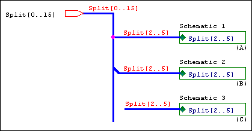
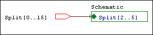
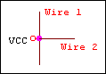
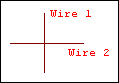
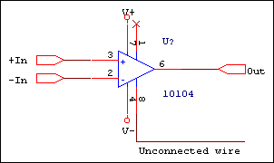
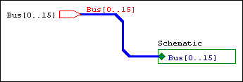
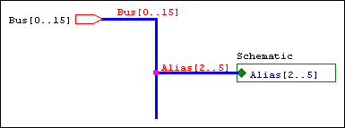

You set the design template using the . The Design
Template dialog box determines the default characteristics
of all the projects created on your system. Because a new
project inherits characteristics from the current Design
Template settings, it’s a good idea to check the
settings before you create a new project.
The options that you define in the Design Template dialog
box are the default settings for all new projects, and for
schematic pages you add to an existing project.
In this section:
Defining fonts for new designs
You can define the fonts for schematic page objects that contain text, such as part references and values. You can define the fonts assigned to the text associated with different schematic page objects in new designs. The fonts specified here do not affect existing designs.
|
|
To change the fonts for an existing project, use the Fonts tab in the . You can access this dialog box by choosing Design Properties from the project manager Options menu. |
To assign fonts for new designs
Note: The default fonts were selected for optimal compatibility with SDT. Changing these fonts may result in less than optimal text sizes for translated projects.
- From the Options menu, choose the , then choose the Fonts tab.
- Click the left mouse button on the font of an item. A standard Windows font dialog box appears.
- Select a font, font style, and size. Click OK to dismiss the font dialog box.
- Click OK.
Defining the title block
You can specify the text to appear in title block fields, as well as the path and filename of the library containing the title block. This affects new projects, as well as new schematic pages in existing projects. There are two types of title blocks: default and optional. Capture places one default title block—which you specify on the Title Block tab in the in the lower right corner of each new schematic page. You may place any number of optional title blocks anywhere on the schematic page, using the on the Place menu.
Default title block
You specify the information that goes into the default
title block in the Title Block tab of the Design Template
dialog box. Capture places a default title block in the
lower right corner of each schematic page (if a library and
title block name is specified), and places the information
you enter in the text fields in the Title Block tab into
the title block.
This information is also used in reports created by the
commands on the Tools menu. It affects new projects, as
well as new schematic pages in existing projects.
You can set the default title block to be visible or
invisible on an existing schematic page by changing the
setting in the in the Schematic Page Properties dialog
box.
Capture provides default title block symbols in the
CAPSYM.OLB library.
Not all of the available default title blocks provide the
same information. For example, TitleBlock0 doesn't
provide any properties for the organization name and
address, while TitleBlock5 provides the organization name
property and all five of the address properties. You must
specify which title block you want for the default in the
Design Template.
The default title block properties that are set in the
Design Template dialog box are as follows:
| Cage Code | Specifies the Cage Code |
| Design Create Date | Specifies the date of creation for the design |
| Design Create Time | Specifies the time of creation for the design |
| Design File Name | Specifies the path and file name of the design file |
| Design Modify Date | Specifies the date of the last modification to the design |
| Design Modify Time | Specifies the time of the last modification to the design |
| Design Name | Specifies the name of the design |
| Doc | Specifies the document number |
| Name | Specifies the name of the title block |
| OrgAddr1 | Specifies the first line of the organization address |
| OrgAddr2 | Specifies the second line of the organization address |
| OrgAddr3 | Specifies the third line of the organization address |
| OrgAddr4 | Specifies the fourth line of the organization address |
| OrgName | Specifies the organization name |
| Page Count | Specifies the number of schematic pages in the design |
| Page Create Date | Specifies the date of creation for the schematic page |
| Page Create Time | Specifies the time of creation for the schematic page |
| Page Modify Date | Specifies the date of the last modification to the schematic page |
| Page Modify Time | Specifies the time of the last modification to the schematic page |
| Page Number | Specifies the number of the schematic page. The page number determines when it will be printed in relation to the other schematic pages of the design |
| Page Size | Specifies the page size of the schematic page, as was set at creation time |
| RevCode | Specifies the revision |
| Schematic Create Date | Specifies the date of creation for the schematic |
| Schematic Create Time | Specifies the time of creation for the schematic |
| Schematic Modify Date | Specifies the date of the last modification to the schematic |
| Schematic Modify Time | Specifies the time of the last modification to the schematic |
| Schematic Page Count | Specifies the number of schematic pages in the given schematic |
| Schematic Page Number | Specifies the order of the schematic page within the schematic |
| Source Library | Specifies the path and file name of the library from where the title block was placed |
| Symbol Library | Specifies the name of the symbol for the title block in the Source Library |
| Title | Specifies the title |
You can add the following property to display system generated information:
| Path Name | Specifies the hierarchical blocks leading from the root to the child using the Name Property for each hierarchical block in the path |
You can use the property editor to add the following property to display the hierarchical path of the schematic on an instance of a title block:
| Schematic Path | Displays the full hierarchical path to the schematic visible and printable on the page |
|
|
You can create custom title blocks and store them in a library using the New Symbol command from the project manager Design menu. If you specify the name of the custom library and title block in the Symbol group box of the Design Template Title Block tab, the custom title block appears in the lower right corner of each new schematic page. |
| Optional title block | You can place any number of optional title blocks anywhere on the schematic page using the Title Block command on the Place menu. Optional title blocks display information that you define as property values for the title block symbol |
|---|
To choose a title block and define the text it contains
- Choose O ptions – D esign Template, then choose the Title Block tab.
- In the Text group box, enter the information you want to appear in the title block.
-
In the Symbol group box, enter the path and filename of
the library containing the title block.
The Library Name text box can be left blank if you are using title block from the CAPSYM.OLB library and CAPSYM.OLB has not been moved to a different directory from where it was installed. - Enter the exact name of the title block into the Title Block Name text box. Symbol names are case sensitive and space sensitive.
- Click OK.
|
|
You can create custom title blocks and store them in a library using the New Symbol command from the project manager Design menu. If you specify the name of the custom library and title block in the Symbol group box of the Design Template Title Block tab, the custom title block appears in the lower right corner of each new schematic page. |
For Capture to automatically place the information you entered in the text fields into your custom title block, you must give your custom title block the appropriate properties.
You can use the Design Template command of the Options menu to specify information for the default title block. In addition, you can edit title block information in the schematic page editor.
To edit title block information
- Select the information string on the title block that needs to change.
- Choose Edit – Properties. The Display Properties dialog box appears.
-
Replace the old information with the new and click OK.
The schematic page editor appears with the new
information in the title block.
OR - Select the title block, and choose Edit – Properties. The property editor appears.
- Place the cursor in the cell of the property you want to change, and enter the new value.
- Click Apply, and close the property editor. The schematic page editor appears with the new information in the title block.
To edit title block information on multiple pages
- Select the design file in the project manager.
- Choose E dit – B rowse – T itleBlocks.
- Click OK to dismiss the Browse Properties dialog box.
- In the Browse window, select the name or names of the schematic pages that contain the title blocks you want to edit.
- Choose E dit – P roperties or press CTRL+E. The Browse spreadsheet editor appears. Use the Browse Spreadsheet to edit properties on one or more schematic pages at a time.
To change the display of title block information
- Select the information string on the title block that needs to change.
- Choose E dit – P roperties.
- In the Display Properties dialog box, choose the Change button. The Fonts dialog box appears.
- In the Fonts dialog box, change the display properties, and click OK twice.
Shortcuts
Double-click on the information string to display the , or double-click on the title block to display the
Setting up a page
You can specify whether inches or millimeters are used as
the unit of measure, the width and height of a schematic
page, and the spacing between pins. For new projects, you
can specify the default unit of measure, the default width
and height of schematic pages, and the spacing between
pins. The value you enter in the Pin-to-Pin Spacing text
box defines how close together pins are placed in the part
editor. It also defines the grid spacing.
Changing from Inches to Millimeters resets the page sizes
to their defaults; therefore, if you make any changes to
the standard page size dimensions, then change the units,
the page size changes are not translated between the two
types of units.
To set up the schematic page size
- Choose O ptions – D esign Template, then choose the Page Size tab.
-
In the Units area, select the default unit of measure for
new projects. This setting only affects the schematic
page editor, not the part editor.
Note: Changing from Inches to Millimeters resets the page sizes to their defaults; therefore, if you make any changes to the standard page size dimensions and then change the units, the page size changes are not translated between the two types of units. - Select the default schematic page size for new projects. For each schematic page size (A, B, C, D, E, and Custom if the unit of measure is Inches; or A4, A3, A2, A1, A0, and Custom if the unit of measure is Millimeters) you can specify the width and height. The values that you enter in the Width and Height text boxes become the dimensions for each page size. You cannot change these dimensions for individual schematic pages, although you can select a different page size, or choose to define a custom size.
-
In the Pin-to-Pin Spacing text box, specify the default
spacing between pins. The value you enter in this text
box defines how close together pins are when you place a
part on a schematic page. It also defines the grid
spacing (the space between grid dots or grid lines). You
cannot change this value for existing projects or
individual schematic pages.
Note: Part size will vary when copying and pasting parts between pages with different pin-to-pin spacings. - Click OK.
Defining the grid reference
For horizontal and vertical border grid references, you can
set the number of border grid references to display in
either direction, whether the grid references are
alphabetic or numeric, whether they increment or decrement
across the schematic page, and how wide grid reference
cells are. You can also make the border, grid references,
and title block visible or invisible. This affects new
projects. You set the border grid references to display
either horizontally or vertically, alphabetically or
numerically, incrementally or decrementally across the
schematic page, and the width of their cells. You can also
make the border, grid references, and title block visible
or invisible on the screen and on schematic pages you
print.
The settings affect new projects.
|
|
You can change these settings for existing schematic pages. Choose Schematic Page Properties from the schematic page editor Options menu, then choose the Grid Reference tab in the Schematic Page Properties dialog box. |
To define the grid reference
- Choose O ptions – D esign Template, then choose the Grid Reference tab.
-
Specify the number of border grid references, whether
they are alphabetic or numeric, whether the grid
references increment (Ascending) or decrement
(Descending) across the schematic page, and how wide the
grid reference cells are.
Note: The size of the Grid Reference font is tied to the width. - For the border, title block, and grid reference, select Displayed to have the item display on the screen or Printed to have the item appear on schematic pages you print. Select ANSI grid references to display the grid references in accordance with ANSI standards (see the glossary entry ANSI).
- Click OK.
Specifying the default hierarchy option for new projects
For hierarchical blocks and part instances that have their
Primitive property set to Default, you can specify if you
want Capture to treat each as primitive (cannot descend
into attached schematic folders) or nonprimitive (can
descend into attached schematic folders). For hierarchical
blocks and part instances that have their Primitive
property set to Default, you can specify if you want
Capture to treat each as primitive (cannot descend into
attached schematic folders) or non-primitive (can descend
into attached schematic folders).
The Primitive and Nonprimitive options only affect new
projects.
|
|
This setting affects how the options on the Tools menu process projects. |
To define the default hierarchy option
- Choose O ptions – D esign Template, then choose the Hierarchy tab.
- For hierarchical blocks and parts, select Primitive or Nonprimitive. All hierarchical blocks and part instances that have their Primitive property set to Default will use the setting selected here.
- Click OK.
|
|
You can change the hierarchy option for existing projects using the Hierarchy tab in the . Choose Design Properties from the project manager Options menu. |
Setting compatibility with OrCAD Schematic Design Tools
You can specify which Capture properties map to which OrCAD
Schematic Design Tools (SDT) part fields when saving a
project in SDT format. Capture uses the SDT compatibility
options in the when you save a
Capture design in SDT format. Capture sets the SDT
compatibility options in the Design Properties dialog box
when you open an SDT schematic folder (.SCH) file in
Capture.
Capture uses a slightly different set of connectivity
rules than SDT. The following cases explain the
differences:
Case 1

The bus is split with like members connecting before and after the split.
|
Situation A |
The bus is split using a junction. |
|
SDT |
Yes |
|
Capture |
No—buses connected through a junction must contain the same number of signals |
|
Situation B |
The bus is split using a bus entry. |
|
SDT |
Yes |
|
Capture |
Ye |
|
Situation C |
The bus is split without any visible connection, but is connected through name. |
|
SDT |
Yes |
|
Capture |
Yes |
Case 2

The hierarchical port connects to the hierarchical block through a wire.
|
SDT |
Yes |
|
Capture |
No—wires in Capture are for single signals only. |
Case 3

The wire connects to the power symbol.
|
SDT |
No |
|
Capture |
Yes |
Case 4

Wire 1 connects to Wire 2 through a label hotpoint.
|
SDT |
Yes |
|
Capture |
No—wires are connected only if they connect through a junction, or if they share an alias. |
Case 5

The hanging wire connected to a pin causes a single node net in netlists.
|
SDT |
No |
|
Capture |
Yes |
Case 6

Buses routed through bus entries are connected to the target object.
|
SDT |
Yes |
|
Capture |
No—you should not use bus entries to route a bus to its target. Use the left mouse button to create turns in the bus route. |
Case 7

Unlike bus members are connected.
|
SDT |
No |
|
Capture |
Yes |
You can specify which properties Capture stores in the eight SDT part fields when saving a project in SDT format. You can also use the part fields for mapping netlists that use part field information.
|
|
To change the part field to property mapping for existing projects, use the SDT Compatibility tab in the . (from the project manager Options menu, choose Design Properties) |
To set up compatibility with OrCAD Schematic Design Tools
When you create a new design, the SDT compatibility options are inherited from the design template. Follow these steps to set up the design template for SDT compatibility:
- Choose O ptions – D esign Template, then choose the SDT Compatibility tab.
- For each Capture property you want mapped to an SDT part field, specify the part field to contain the property value.
- Click OK.
Changing the SDT compatibility options for a single design
When you save a design in SDT format, Capture uses the SDT compatibility options in the . Follow these steps to change a design's SDT compatibility options:
- With the program manager active, select the Design folder.
- Choose O ptions – D esign Properties, and choose the SDT Compatibility tab.
- Specify the properties you want to map to the SDT part fields for the active design.
Translating part fields from SDT to Capture properties
Capture translates SDT part fields into properties. If you want to change the user property names before translation, follow these steps:
- Open the design's SDT.CFG file in any text editor.
- Locate the lines that specify the part field names, and change them to suit your needs.
- Save your changes, and exit the editor.
Translating Capture properties to SDT part fields
You can specify properties for Capture to translate into SDT part fields by following these steps:
- Choose O ptions – D esign Properties, and then select the SDT Compatibility tab.
- Specify the properties you want to map to the SDT part fields.